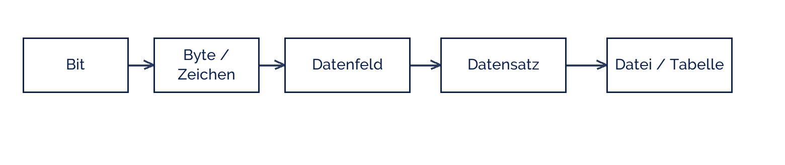

blandinejoannic
blandinejoannic
Good morning!
Nur das Schöne wird die Welt retten!
Fjodor Dostojewski
Nicht verzagen, Doc Alvers fragen!
Informatik — Grundkurs 12
Von Bit bis Datenbank
Die Datenhierarchie — und wie ein Rechner strukturierte Daten speichert
Nicht verzagen, Doc Alvers fragen!
Kapitel 01
Die Hierarchie
Sechs Stufen, aufeinander aufgebaut
Nicht verzagen, Doc Alvers fragen!
Die Datenhierarchie

Jede Stufe besteht aus der vorigen — und bekommt dabei eine Bedeutung dazu
Über der Datei steht die Datenbank: mehrere Tabellen mit Beziehungen
Nicht verzagen, Doc Alvers fragen!
Die Stufen im Einzelnen
| Stufe | ist | Beispiel |
|---|---|---|
| Bit | kleinste Einheit, 0 oder 1 | 1 |
| Byte | 8 Bit, meist ein Zeichen | 01001101 = M |
| Datenfeld | eine zusammengehörige Angabe | Nachname |
| Datensatz | alle Felder zu einem Objekt | eine Schülerzeile |
| Datei / Tabelle | alle gleichartigen Datensätze | die Schülerliste |
| Datenbank | mehrere Tabellen mit Beziehungen | Schulverwaltung |
Der Sprung von Byte zu Datenfeld ist der entscheidende: dort kommt die Bedeutung dazu
Ein Byte allein sagt nichts. Erst das Feld sagt: das ist ein Nachname
Nicht verzagen, Doc Alvers fragen!
Kapitel 02
Vom Feld zum Byte
Wie eine Angabe wirklich im Speicher liegt
Nicht verzagen, Doc Alvers fragen!
Dieselbe Angabe, verschiedene Speicherung
| Angabe | als Text | als Zahl | Bemerkung |
|---|---|---|---|
| 2026 | 4 Byte (Zeichen) | 2 Byte (Ganzzahl) | Zahl ist kompakter |
| 01067 | 5 Byte | geht nicht ohne Verlust | führende Null |
| true | 4 Byte | 1 Bit | Wahrheitswert |
| Meier | 5 Byte | nicht möglich | reiner Text |
Der Datentyp entscheidet über Speicherbedarf, Sortierung und mögliche Operationen
Bei Unicode/UTF-8 braucht ein Umlaut zwei Byte — Textlängen sind nicht Zeichenzahlen
Nicht verzagen, Doc Alvers fragen!
Wie eine Datei strukturierte Daten hält
Feste Satzlänge: jedes Feld hat eine feste Größe, Datensätze folgen lückenlos
Vorteil: der n-te Datensatz lässt sich direkt berechnen — schneller Zugriff
Nachteil: verschwendeter Platz und starre Struktur
Trennzeichen (CSV): Felder durch Komma, Sätze durch Zeilenumbruch
Vorteil: sparsam und lesbar. Nachteil: Suchen heißt Lesen — von vorn bis hinten
Nicht verzagen, Doc Alvers fragen!
Kapitel 03
Warum das nicht reicht
Der Weg zur Datenbank
Nicht verzagen, Doc Alvers fragen!
Grenzen der Dateiverwaltung
| Problem | was passiert |
|---|---|
| Redundanz | dieselbe Adresse steht in drei Dateien |
| Inkonsistenz | sie wird nur in einer davon geändert |
| Abhängigkeit | jedes Programm muss das Dateiformat kennen |
| Mehrbenutzerbetrieb | zwei schreiben gleichzeitig, einer verliert |
| Zugriffsschutz | wer die Datei hat, sieht alles |
Genau diese fünf Probleme löst ein Datenbankmanagementsystem
Deshalb ist die Datenbank keine bessere Datei, sondern eine andere Architektur
Nicht verzagen, Doc Alvers fragen!
Bit, Byte, Datenfeld, Datensatz, Datei, Datenbank. Die Bedeutung kommt erst auf der Stufe des Datenfelds dazu.
Merksatz
Nicht verzagen, Doc Alvers fragen!
Fun Facts: Daten und Speicher
Das Wort Byte wurde 1956 bei IBM geprägt — bewusst anders geschrieben als „bite“
Dass ein Byte 8 Bit hat, ist keine Naturkonstante: frühe Rechner nutzten 6, 7 oder 9
ASCII von 1963 kam mit 7 Bit aus — für Umlaute reichte das nicht
UTF-8 von 1992 ist rückwärtskompatibel und braucht für Umlaute zwei Byte
Ein Kibibyte sind 1024 Byte, ein Kilobyte 1000 — Festplattenhersteller rechnen gern in Kilo
Nicht verzagen, Doc Alvers fragen!
Eure Aufgabe
Öffnet eine CSV-Datei im Texteditor und benennt Datenfeld, Datensatz und Datei
Rechnet aus: wie viele Byte braucht ein Datensatz eurer Tabelle als Text?
Vergleicht das mit derselben Tabelle bei fester Satzlänge
Findet in einer Beispieldatei eine Redundanz und beschreibt die mögliche Inkonsistenz
Formuliert drei Sätze: Warum genügt eine Datei für die Schulverwaltung nicht?
Nicht verzagen, Doc Alvers fragen!